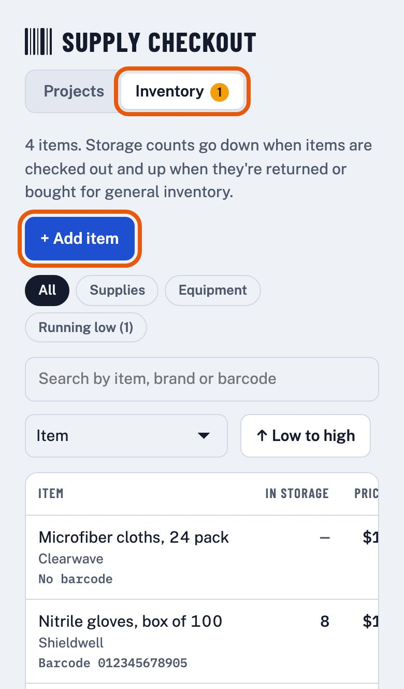
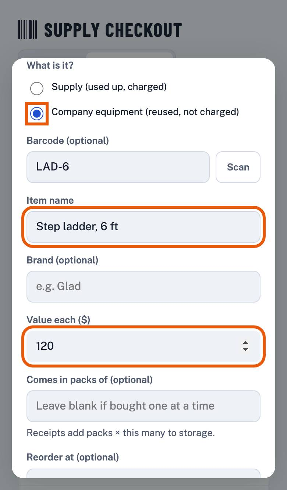
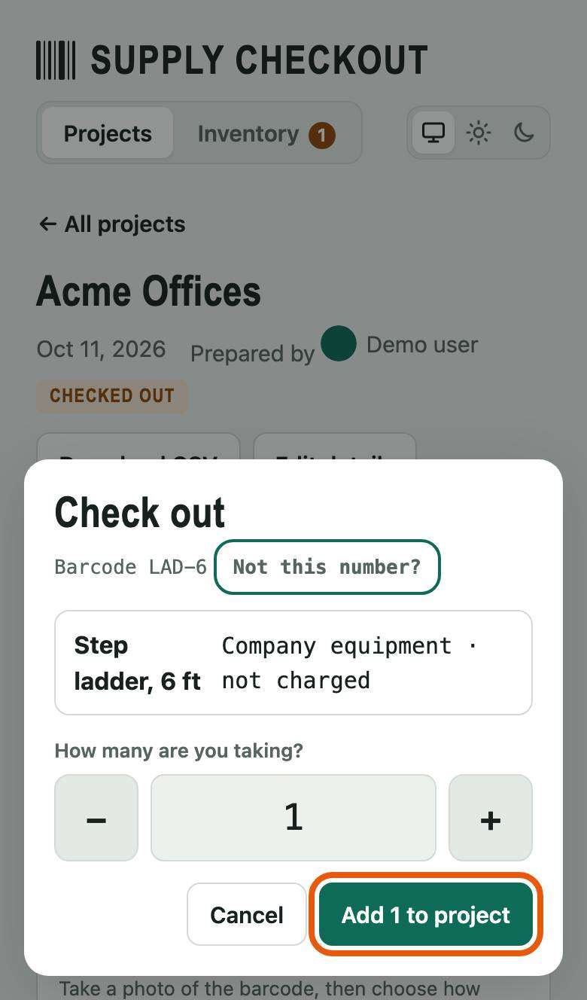
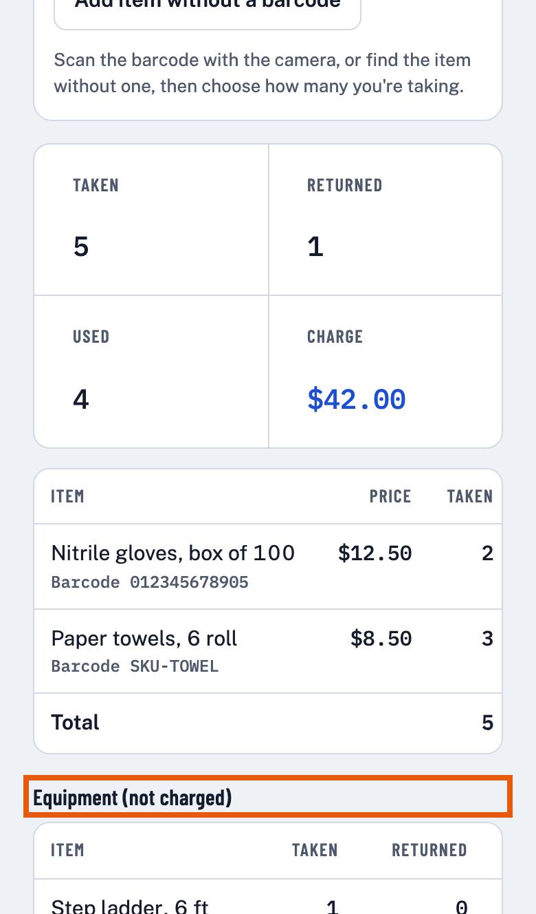
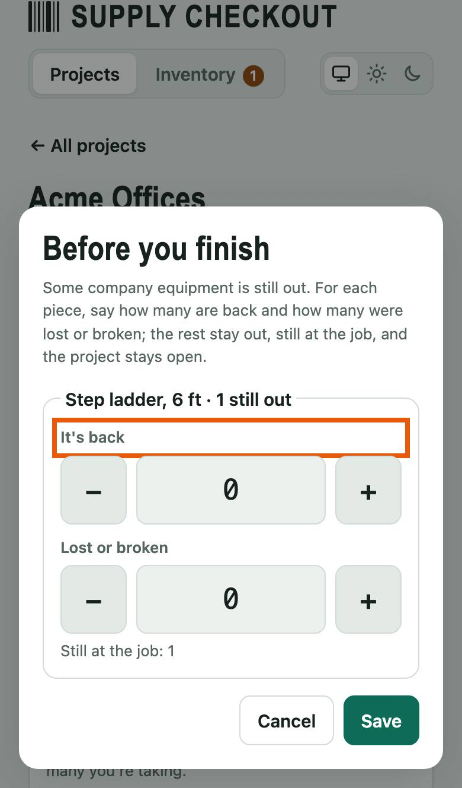
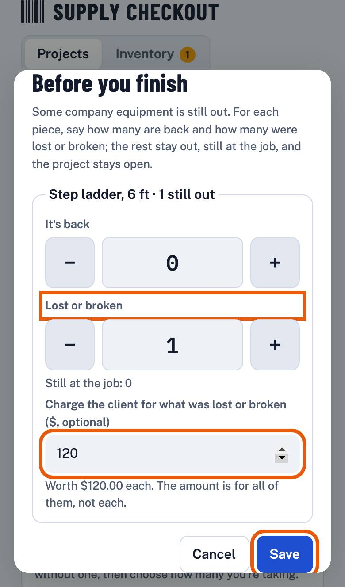
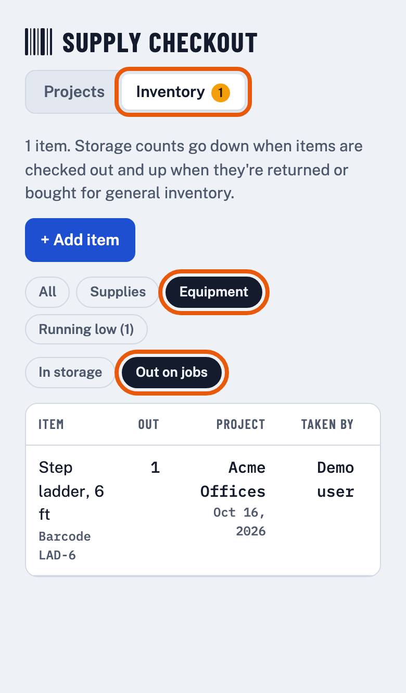

How-to Lesson 3
Take company equipment to a job and bring it back
About this lesson
- What you'll do
- Mark the things that go to jobs and come back, like ladders, vacuums and cords, as company equipment. Take them out on a project, and when you finish, say where each one is. Equipment is listed on the project but never charged, unless it's lost or broken and you choose to charge for it.
- How long it takes
- About 5 minutes.
- You need
- A phone or laptop, signed in to Supply Checkout.
-
Step 1 of 7
Open Inventory
Tap Inventory at the top, then + Add item.

-
Step 2 of 7
Add it as company equipment
Under What is it?, pick Company equipment (reused, not charged). Scan or type its barcode if it has one, type its name in Item name, and what you paid for one in Value each ($). Then tap Save at the bottom.

-
Step 3 of 7
Check it out like any item
Open the job's project and scan the equipment, the same as a supply (lesson 1). The form says it's company equipment and not charged. Tap Add 1 to project.

-
Step 4 of 7
It's listed apart from the supplies
The project lists it under Equipment (not charged), with how many are still out. It's not in the project's charge or the client's CSV.

-
Step 5 of 7
Finish: say where each piece is
Back from the job, return what's back (lesson 1), then tap Finish return. If any equipment is still out, the app asks first. For each piece, set how many are back under It's back. Anything you don't count stays out, still at the job, and the project stays open.

-
Step 6 of 7
Lost or broken? You can charge for it
Set how many under Lost or broken. To charge the client for it, type an amount in Charge the client, or leave it empty for no charge. Then tap Save.

-
Step 7 of 7
See what's out, and who has it
In Inventory, tap Equipment, then Out on jobs. Each piece that's out shows the project, who took it and when.
